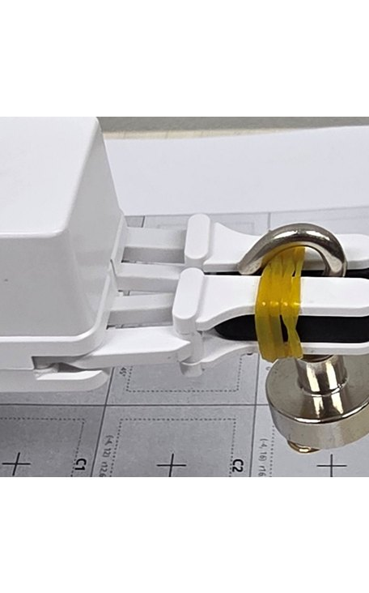
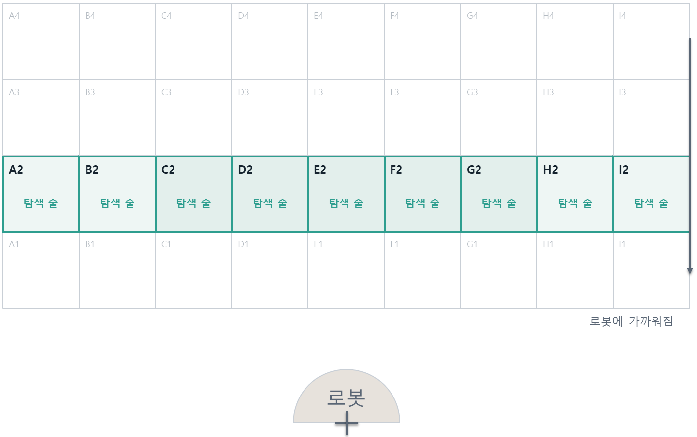

주제 9 · 22차시
자석 탐색
한 줄에 숨은 클립을 몇 번 만에 찾나
실제 구분 차시보다 많은 시간이 소요될 수 있음.
집게에 자석을 달면 자석 탐색 · 08_자석_확인.py
준비물
네오디뮴 원형 자석 1개(지름 10~12mm) · 철 클립 · 통 하나. 자석은 집게 날 아래 면에 테이프로 붙이고 집게를 닫아 둔다.
먼저 재는 것
08_자석_확인 으로 붙는 높이·손목을 돌려도 안 떨어지는지·겹쳐 붙는지를 잰다.
측정한 권장 높이를 09 · 10 의 _가상.py 맨 위 ‘자석높이’ 에 적는다.
정해 둔 것
로봇은 클립을 놓지 못한다. 붙은 클립은 달고 다니거나 사람이 뗀다.

자석 탐색 — 몇 번 만에 찾나 자석 탐색 · 09_자석_탐색.py
줄 = ["A2", "B2", "C2", "D2", "E2", "F2", "G2", "H2", "I2"]
판수 = 3 # 판마다 짝이 클립을 다시 놓는다
# 실행하면 고른다
# 1 순차 왼쪽 끝부터 차례로
# 2 랜덤 남은 칸 아무 데나
# 3 직접 내가 정한 순서
# 4 이진 가운데를 찍고, 짝이 "더 왼쪽 / 더 오른쪽"
for cell in 순서:
arm.pick_magnet(cell) # 자석을 내렸다 든다
if 붙었나(cell): # 사람이 y/n
break작업 지도 2행 한 줄에 짝이 클립 하나를 놓는다. 술래는 지도를 보지 않는다.
로봇이 칸을 하나씩 찍고, 붙었는지를 사람이 답한다. 몇 번 만에 찾았나가 점수다.
찍는 방식을 골라 세 판씩 돌리고 세 판의 평균과 가장 많이 걸린 횟수를 적는다 (이론값과 다를 수 있다).
순차와 랜덤
고르게 숨긴다면 순차·랜덤 모두 평균 5번 · 최악 9번으로 횟수는 같고, 이동 거리는 랜덤이 세 배쯤 길다. 이진은 평균 3번쯤 · 최악 4번이다.
이진은 왜 따로인가
자석은 '붙었나' 만 안다. 정답이 어느 쪽인지 짝이 말해 줘야 반을 버린다 — 정렬된 자료라야 이진 탐색이 된다. 아홉 칸을 네 번 안에 끝낸다.
가상으로 돌리면 방식별 300판 평균을 표로 보여 준다 · 이 파일 하나로 돌아간다
자석 탐색 — 어느 칸에 놓나 09_자석_탐색.py · A3 작업 지도

· 짝이 A2~I2 가운데 한 칸에
클립 하나를 놓는다.
— 술래는 지도를 보지 않는다.
· 로봇이 찍어 볼 순서를 고르고
(순차·랜덤·직접·이진)
몇 번 만에 찾는지 센다.
준비물 — 자석 1개 · 철 클립 1개
(자석은 집게 날 아래 면에)
역할 2명 — 짝 / 술래
2행 한 줄 · 클립 하나 — 술래는 지도를 보지 않는다